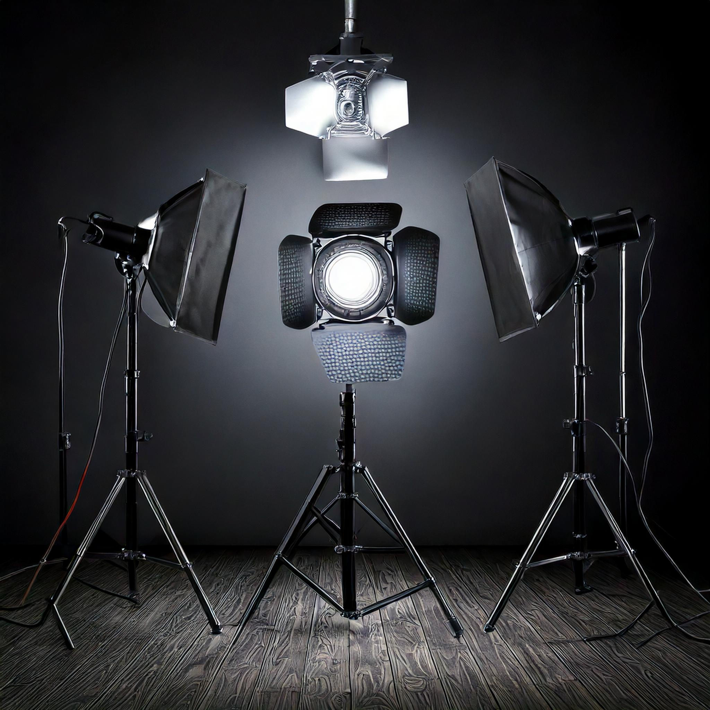

La fotografía es más que solo apuntar y disparar. Desde la composición hasta la edición, cada imagen cuenta una historia. En este artículo, exploraremos los elementos clave que transforman una simple foto en una obra de arte.
La composición es la base de toda fotografía. Reglas como la regla de los tercios, el equilibrio visual y el uso de líneas guía son fundamentales para crear imágenes impactantes. Una buena composición dirige la mirada del espectador hacia el punto focal de la imagen.
La luz es el elemento más importante en la fotografía. Ya sea natural o artificial, la iluminación define el ambiente, los colores y las sombras. Aprender a manipular la luz puede marcar la diferencia entre una foto ordinaria y una extraordinaria.
La edición es donde la magia sucede. Herramientas como Adobe Lightroom y Photoshop permiten ajustar colores, contrastes y detalles para perfeccionar la imagen. Sin embargo, es crucial no exagerar y mantener la naturalidad.

Crear una fotografía perfecta es un proceso que combina técnica, creatividad y pasión. Desde la composición hasta la edición, cada paso es esencial para contar una historia visualmente impactante. Descubre más sobre la fotografía perfecta aquí y experimenta el proceso creativo de principio a fin.